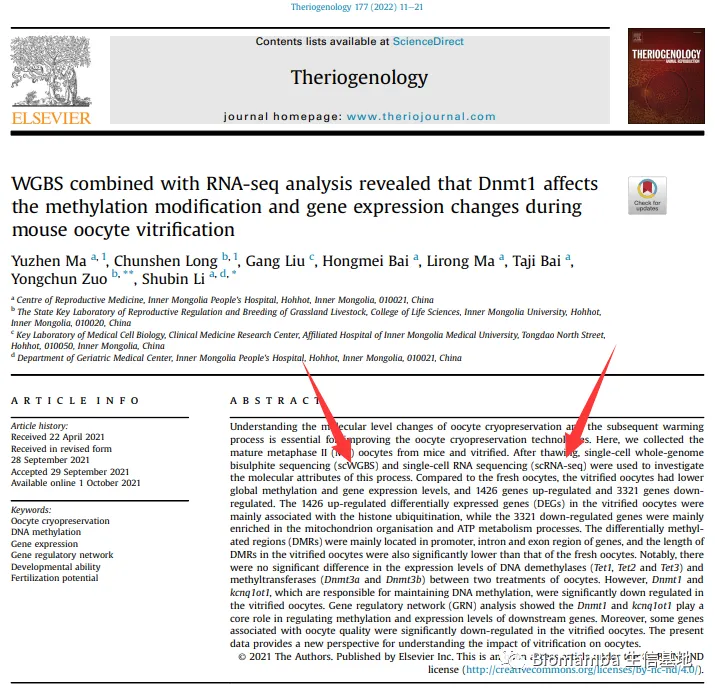
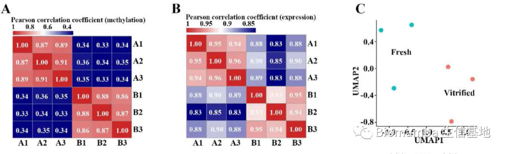
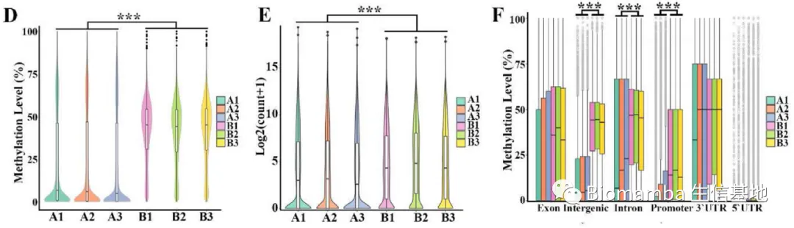
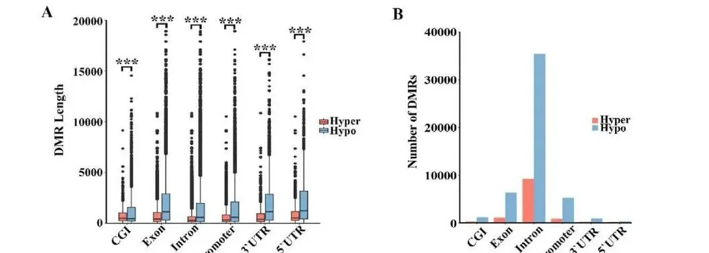
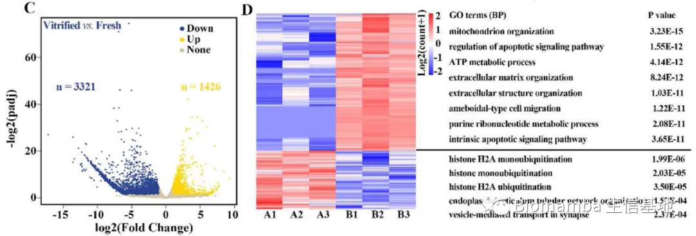
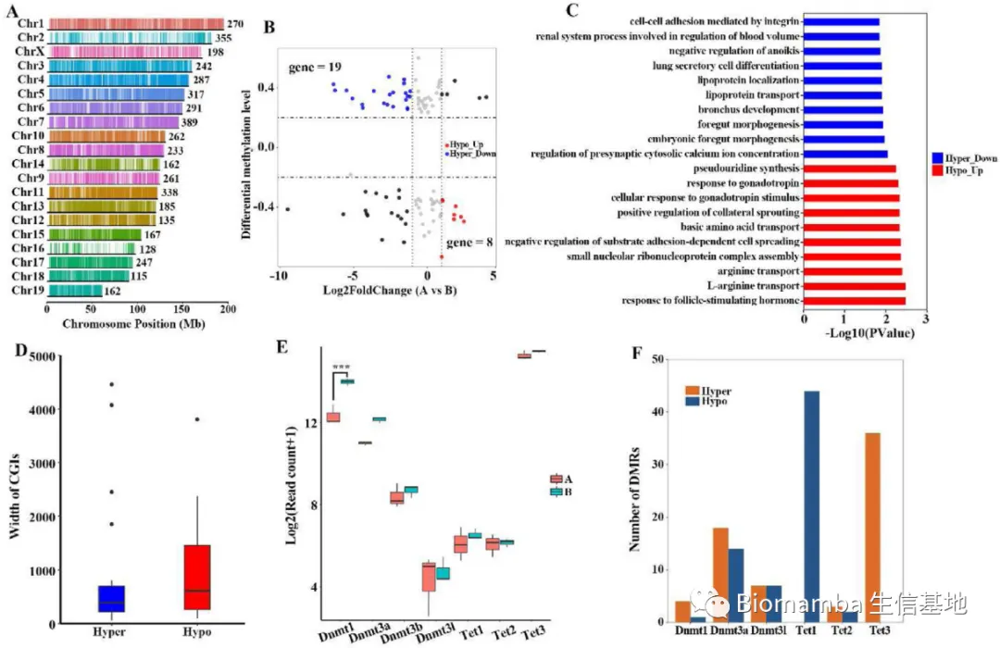
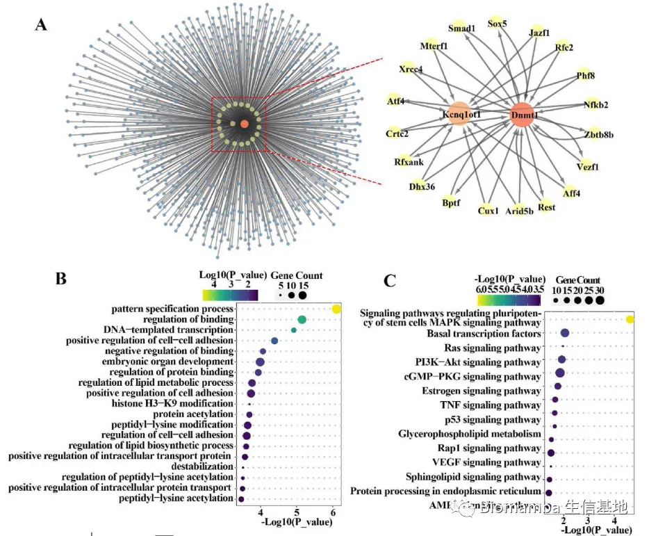
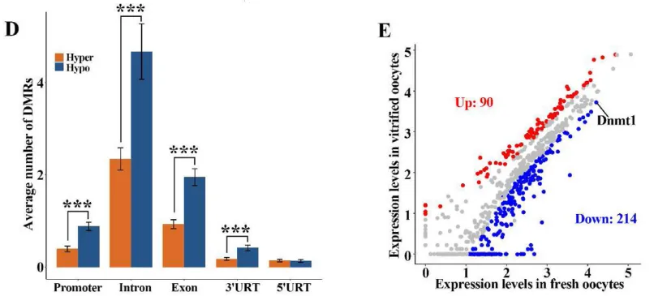
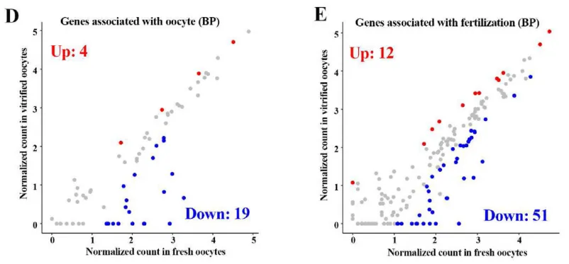
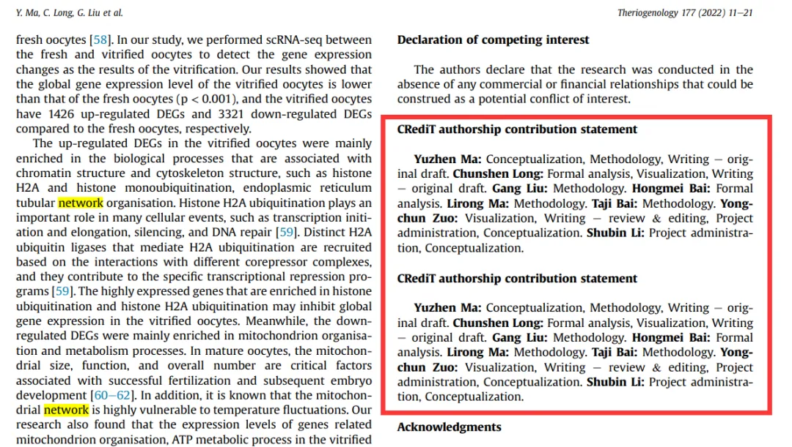

自测scRNA-Seq+scWGBS=3分三区文章？
原文：https://mp.weixin.qq.com/s?__biz=MzAwMzIzOTk5OQ==&mid=2247498939&idx=1&sn=1b33d219c795f2de8ff66a5c330a3d24&chksm=9b3c85ebac4b0cfd050a7c0abe11dead991a988aa5b790eac6fd57de2f76a85ef2191d8b9ca6#rd 合集：单细胞教程全收录 / 文献速递
写在前面
最近在捣鼓表观遗传学 ，处理了一批Bulk RNA-Seq和WGBS(Whole Genome Bisulfite Sequencing)的数据。熟悉我风格的粉丝都知道，我一般会读几篇文献再下手，遂于PubMed中检索了几篇文章，发现一个2022年发表的题为"WGBS combined with RNA-seq analysis revealed that Dnmt1 affects the methylation modification and gene expression changes during mouse oocyte vitrification"似乎能给我带来一些分析思路上的启示，一读摘要，其中赫然写着scRNA-Seq(single cell RNA sequencing)和scWGBS(single cell whole genome bisulphite)，但是一看<

具体内容
生殖医学的内容不是我们研究的重点，此处不作介绍，简单来说现在有一种玻璃化(vitrification)冻存法可用于低温冻存卵母细胞，利用这种方法保存的卵母细胞虽然存活率和受精能力已经较传统方法大大提升。但与新鲜的卵母细胞仍存在差异，而此前的研究发现二者之间在转录组水平与基因组甲基化水平上差异甚微(Introduction是这么说的)，作者遂著此文。点进来之前我是很好奇的，我的记忆中卵母细胞体积较大，并且即便使用一些雌激素促进超数排卵，也不能够获得足够的细胞数量，所以理应不太适合做单细胞水平的建库。我们来看看Methods，作者通过对6-8周龄的ICR小鼠使用PMSG、HCG促进排卵后，获取了117个卵母细胞用于玻璃化冻存与复苏。scRNA-Seq方面，作者依托的技术是SMART-Seq2，而WGBS方面似乎是直接将细胞裂解用于DNA提取并经重亚硫酸盐处理后直接走Illumina的建库流程。具体内容还需要通过Results来了解一下。在经过基本的数据处理后作者对WGBS获得的甲基化评分与SMART-Seq2的log2(normalized counts)分别进行了各样本的相关性分析(A-B)与UMAP降维分析(C)，初步证明了组内的一致性与组间的异质性。但是我有一个小小的疑惑，说好的SMART-Seq和scWGBS呢？为何这些图看起来都是以生物学重复为基本单位而不是单细胞水平展现的。相关性分析以生物学重复为单位尚可理解，UMAP图不以单细胞为分辨率作展示就很奇怪了。

与此同时，作者发现与以往的报道不同，玻璃化冻存的卵母细胞(A组)与新鲜的卵母细胞(B组)之间不仅存在转录组水平基因表达量与基因组水平甲基化评分的差异(玻璃化冻存后的卵母细胞基因甲基化水平整体降低)，在基因的各个区域中，intergenic、intron、promoter中也展示出了极显著的差异。

此后作者对比了甲基化程度高低区域的序列长度，发现高甲基化序列的DMR(differentialy methlyated regions)长度更短(A)，且包含的DMR区域更少(B)。这里我稍微有些疑惑，难道不是应该比较组间的DMR分布差异或甲基化区域长度差异 ，为何做起了高甲基化区域与低甲基化区域的对比？

接下来作者进行了转录组的差异分析(A-B)，发现下调(对比是Vitrified vs Fresh，这里为什么又换回组间差异分析了，这不就和上面的甲基化分析对不上号了吗)的基因数量要远多于上调的基因，这里我也有个小小的疑惑，一般来说甲基化水平的上升不利于基因的表达，为何Vitrified组甲基化水平降低了，总体的差异基因确实下调的。随后的GO富集分析显示A组(就是Vitrified组，一张图一个说法，无力吐槽)下调的基因主要富集在mitochondrial organization、ATP metabolic process等能量代谢相关通路，上调的基因主要富集在histone H2A monoubiquitination、histone monoubiquitination、endoplasmic reticulum tubular metwork等染色质、细胞质结构相关的通路。

此后作者展开了甲基化数据的组间差异研究，发现雌鼠的20条染色体上均有不同数量的DMR分布(A)。在包含的1285个DMR中大都属于非基因编码区域，仅97个DMR坐落在RNA-Seq差异基因的启动子或基因编码区域(B)。这97个基因中的上调基因富集于cell-cell adhesion mediated by integin、regulation of presynaptic cytosolic calciumion concentration、lipoprotein等通路，下调基因富集于cellular responses to gonadotropic stimulus、follicle stimulating hormone通路(C)。之后作者关注了几种与甲基化形成相关的酶在组间(E)以及高低甲基化样本中的表达量差异，组间差异仅Dnmt1具有显著的差异，在A组(即Vitrified组)中明显下调。这是一种既能维持DNA原有的甲基化水平(具甲基转移活性)、又能对DNA进行从头甲基化的酶，这能在一定程度上解释Vitrified组整体甲基化水平下调的现象。

此后作者通过SCENIC的转录因子预测(这一工具的教程我们后续会出)发现 Dnmt1 具有531个下游基因，而 Kcnq1ot1(很好奇这个基因又是从哪来的)可作为51个转录因子的下游基因(A)。这两种基因的相关基因集也被用于富集分析(B-C)。

紧接着作者又展示了 Dnmt1 与 Kcnq1ot1 相关DMR在基因不同区域由甲基化程度高低带来的数量差异(D)。随后由展示了两组间与Dnmt1与Kcnq1ot1所属regulon的差异基因(E)，这里我又有一点小小的疑惑， Kcnq1ot1为何又不见了 ？

随后作者做了在我看来唯一与其研究目的相符的分析——卵母细胞相关(D)及受精能力相关基因(E)的表达量组间差异，发现这些相关基因均在Virified组中下调，所以导致了Virified组受精能力与胚胎发育能力的减弱(啊这不是写文章前就知道的麽。。。)。

聊聊读后感
在看完摘要之后我是抱着替作者打抱不平的心态阅读全文的，毕竟做了6个样本的SMART-Seq和WGBS，费用肯定是在数十万元 这个档次的，发表一篇三分不到的文章显然有些不值。但是读完之后我仿佛明白了很多事情，我无德无能，但是让我站在事后诸葛的角度来评价的话，我觉得这篇文章有以下问题/需要修改的地方：
1、说是单细胞水平的转录组测序，但是分析过程完全没体现出单细胞分辨率 下的任何分析内容，包括SCENIC其实可以绘制AUCell score的UMAP图或AUC曲线，这些都是可以丰富文章内容的点，但完全没有任何展示。而甲基化部分的内容也声称为scWGBS，但分析结果看起来也都与bulk一致 。感兴趣的同学可以下载原始数据看一看，如果这篇文章的测序真的是在单细胞水平下完成的，建议展示一些单细胞分辨率的分析，不要自降身段。
2、可能是我的问题，我不是很理解为何要做高甲基化区域与低甲基化区域DMR数量、长度的对比，我认为最主要的差异分析应该为vitrified与fresh组间差异分析 。
3、该文的图注中一会A组一会B组，一会vitrified vs fresh，建议全文统一 ，否则读者读起来真的很累。
4、对于作者研究内容的生物学意义而言，应当在文章伊始就找出与卵母细胞受精与胚胎发育相关基因的表达量与甲基化水平组间差异，后文围绕这些基因进一步寻找上下游调控基因进行讨论。而不是像文章那样以卵母细胞受精与胚胎发育相关基因的讨论作为结尾，这导致作者给出的结论几乎是其他文章中已报道过的表象，有种听君一席话、就是一席话 的感觉。
5、** Kcnq1ot1 基因**一会出现、一会消失，不知所云。
6、如果有条件的话可以对关键基因做一些QPCR或焦磷酸测序(其他一代测序也可以)，相比于本文涉及到的各个组学，这些实验成本都不高 ，并且容易完成。
7、一模一样的作者声明居然重复了两次 ，这就没办法吐槽了，不知道是作者的锅还是编辑的锅：


如何联系我们
 公众号后台消息更新不及时，超过48h便不允许回复读者消息，这里给大家留一下领取资料、免费服务器的微信号 ，方便各位随时交流、提建议(科研任务繁重，回复不及时请见谅)。此外呼声一直很高的交流群 也建好了，欢迎大家入群讨论：永久免费的千人生信、科研交流群
公众号后台消息更新不及时，超过48h便不允许回复读者消息，这里给大家留一下领取资料、免费服务器的微信号 ，方便各位随时交流、提建议(科研任务繁重，回复不及时请见谅)。此外呼声一直很高的交流群 也建好了，欢迎大家入群讨论：永久免费的千人生信、科研交流群
大家可以阅读完这几篇之后添加给生信入门初学者的小贴士 如何搜索公众号过往发布内容

 您点的每个赞和在看，我都认真当成了喜欢
您点的每个赞和在看，我都认真当成了喜欢